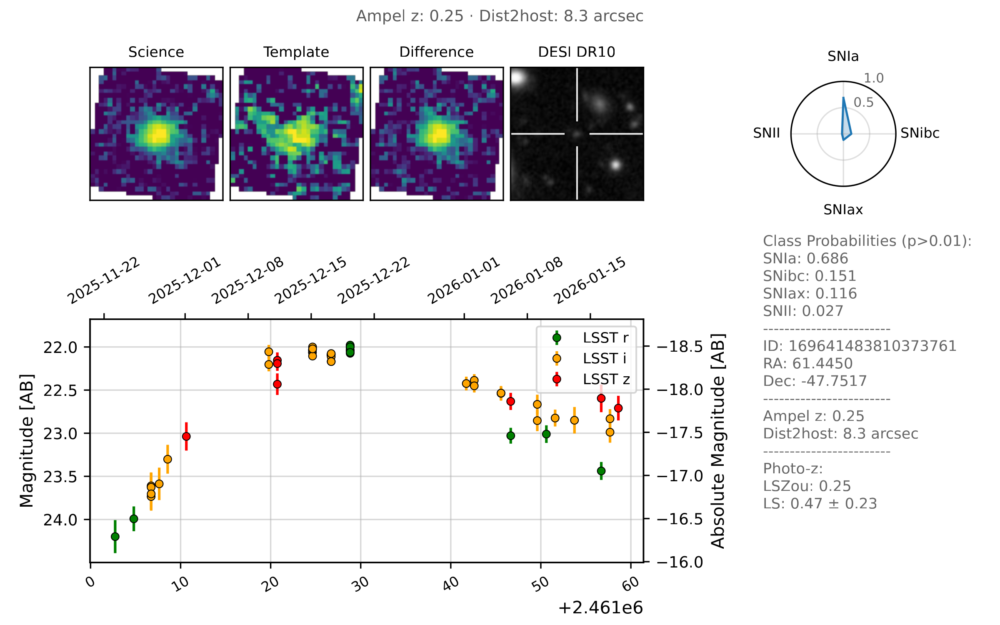

Rubin/LSST AMPEL streams

An AMPEL instance hosted at the DESY Zeuthen computing center will serve as one of the global distribution nodes for alerts from the Vera C. Rubin Observatory (LSST). Alert processing is organized into science channels, each optimized for a specific scientific goal and developed in close collaboration with dedicated science teams.
Accessing data
LSST alert products associated with AMPEL science channels are primarily distributed via public Kafka streams, for example through the Hopskotch service. The Ampel-Access package provides tools for subscribing to and parsing these streams, supporting workflows from interactive exploration to Multi-messenger candidate search.
Hopskotch: https://www.scimma.org/hopskotch
Ampel-Access: local overview page
Alternative access methods include distribution of time-critical events via Slack channels and reprocessing of alerts using the LSST archive. Please contact the AMPEL team to gain access to these services.
VRO/LSST science programs
Extragalactic transients
This channel targets extragalactic transient events suitable for studies of rare and extreme objects, the early universe, and cosmology. Objects in this channel are highly likely to be extragalactic and have sufficient photometric coverage to enable reliable classification.
Topic name on Hopskotch: ampel.lsst.extragalactic-transients
Infant explosive events
The depth of LSST enables detection of very young transients, providing unique constraints on early-time physics. This channel has very low alert volume, selects objects that are young and associated with nearby galaxies, and is optimized for rapid follow-up observations.
Topic name on Hopskotch: ampel.lsst.extragalactic-infants
Multi-messenger optical counterparts
LSST’s deep, multi-band observations enable detailed comparison with non-electromagnetic messengers such as gravitational waves and neutrinos. This channel provides a curated stream of transients spatially and temporally associated with multi-messenger localization maps.
Released soon on Hopskotch.
Adding further science programs
AMPEL is designed to be extensible. New science channels can be added and existing ones refined as LSST data characteristics become better understood. Typically: user groups develop and tune pipelines locally using archival data, pipelines are validated and reviewed, and approved pipelines are deployed into live processing by AMPEL operators. The output from such user defined science channels can be either private or public (although we encourge the latter).
Example notebooks and jobs:
https://github.com/AmpelAstro/Ampel-HU-astro/examples
Contact for more info: ampel-info@desy.de
Core pipeline components
Filtering
Each channel configures filtering designed to limit throughput into what can be managed by science users working locally. Typical filtering rejects old transients with long-term prior variability not matching the target source class and removes stellar targets identified e.g. through motion or PSF shape.
Example unit implementation: DecentVroFilter.py
Catalog matching
AMPEL performs catalog cross-matching using the DESY AMPEL catalog service and external resources (e.g. NOIRLab catalogs). Matched information is combined using Digest Redshift to produce an AMPEL redshift estimate. "Ampel Z" where available produces a weighted average of all available nearby galaxy redshifts, where the weighting is set by the redshift accuracy.
API documentation: DESY catalog service
Photometric classification
Photometric classification in AMPEL uses mature, state-of-the-art methods combining encoder–decoder neural networks and gradient-boosted decision trees (e.g. LightGBM, XGBoost). These architectures were validated both on real data (ZTF, noisztf) and were top-performing in siumulation challenges such as ELAsTiCC and Mallorn.
Both binary and fine-grained multi-class classifiers are supported. Classification results are fully provenance-tracked: each state explicitly references the exact set of observations used. The performance of every classifier critically depends on the versioning and training, and every classifiction is thus categorized by the tuple of state (input data), classifier name (algorithm identifier), model name (training sample and output selection) and version. For each of these, a number of probabilities is provided (e.g. ‘P(SNIa)=0.3’).
Further details: arXiv:2501.16511